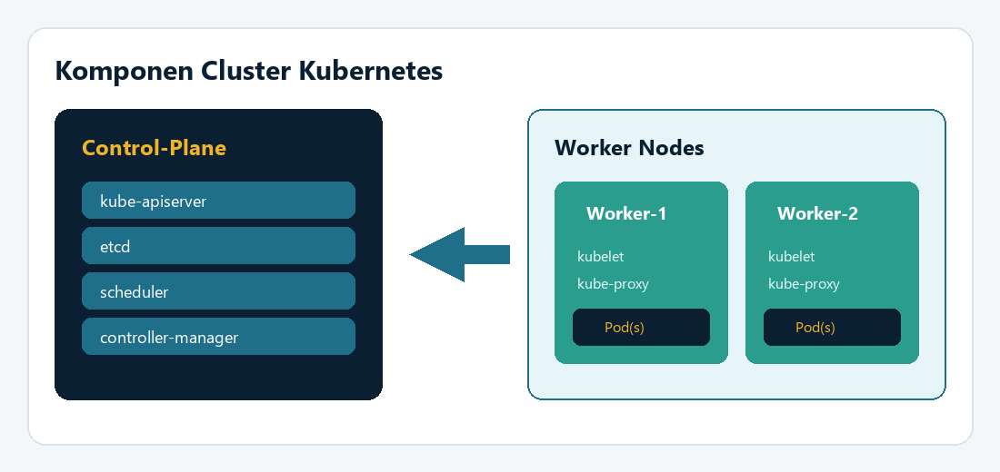

Kubernetes (K8s) adalah platform orkestrasi kontainer yang mengatur penjadwalan,
penskalaan, dan pemulihan aplikasi. Cluster terdiri dari node control-plane (master)
dan node worker.
Istilah penting: Pod (unit deploy), Deployment (menjaga replika),
Service (akses jaringan stabil), dan Namespace (isolasi logis).

Gambar. Control-plane mengatur cluster; worker menjalankan Pod.
Apa itu Rancher?
Rancher menyediakan antarmuka manajemen untuk membuat dan mengoperasikan cluster Kubernetes.
Alih-alih merangkai semua komponen control-plane secara manual, Anda dapat:
Membuat cluster dari UI Rancher
Menjalankan perintah registrasi (curl ... | sh) pada VM master/worker
Memantau kesehatan node dan workload
Contoh perintah yang sering muncul di lab (nilai token diganti dari UI):
# Di host Rancher — jalankan server
sudo docker run -d --restart=unless-stopped \
-p 80:80 -p 443:443 --privileged \
--name rancher rancher/rancher:latest
# Di node (setelah Create Cluster di UI) — contoh join worker
curl -fL https://<IP-RANCHER>/system-agent-install.sh | sudo sh -s - \
--server https://<IP-RANCHER> \
--token <CLUSTER_TOKEN> \
--worker